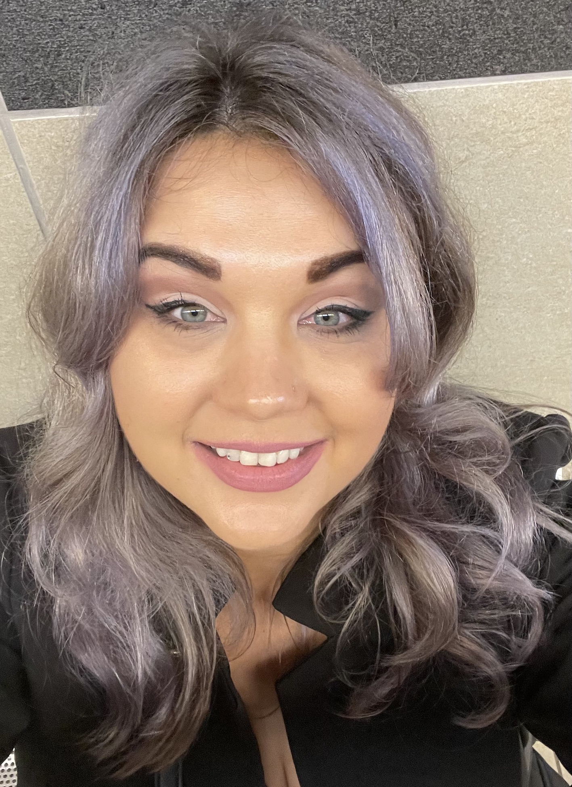

Geachte Lezer,
Met veel enthousiasme schrijf ik deze motivatiebrief om mijn interesse in de functie van Office Manager bij uw tandartspraktijk tot uiting te brengen.
Ik ben ervan overtuigd dat mijn vaardigheden, ervaring en passie voor organisatie en klantenservice mij een waardevolle aanvulling maken op uw team. Als Office Manager heb ik altijd al een sterke affiniteit gehad met het beheren en organiseren van administratieve processen in een tandartspraktijk. Ik ben gefascineerd door de mogelijkheid om een soepel verlopende praktijk te creëren, waarbij zowel de patiënten als het team zich op hun gemak voelen. Ik heb 5jaar ervaring als Office Manager, waarbij ik heb gewerkt in verschillende tandartspraktijken. Deze ervaring heeft mij een brede kennis gegeven van de dagelijkse taken en verantwoordelijkheden die gepaard gaan met het beheren van een tandartspraktijk. Ik ben bekend met het plannen en coördineren van afspraken, het beheren van patiëntendossiers, het afhandelen van facturatie en betalingen, en het verzorgen van de algemene administratie. Daarnaast ben ik goed in het aansturen en motiveren van een team. Ik geloof sterk in het belang van een positieve werkomgeving en open communicatie. Ik ben bekend met het voeren van functioneringsgesprekken, het opstellen van werkroosters en het zorgen voor een goede samenwerking tussen verschillende afdelingen. Wat mij onderscheidt als Office Manager is mijn vermogen om klantgericht te denken en te handelen.
Ik begrijp dat patiënten behoefte hebben aan een vriendelijke en gastvrije ontvangst, en ik streef ernaar om een positieve ervaring te bieden. Ik ben goed in het omgaan met verschillende persoonlijkheden en ik ben in staat om snel en effectief te reageren op vragen en verzoeken. Ik ben zeer gemotiveerd om mijn carrière voort te zetten als Office Manager bij uw tandartspraktijk. Ik bewonder de reputatie van uw praktijk en de toewijding aan het leveren van hoogwaardige tandheelkundige zorg. Ik ben ervan overtuigd dat mijn vaardigheden en persoonlijkheid goed passen bij de waarden en normen van uw praktijk.
Mag ik de gelegenheid krijgen om mijn motivatie en ervaring verder toe te lichten tijdens een persoonlijk gesprek. Ik kijk ernaar uit om meer te horen over de mogelijkheden bij uw tandartspraktijk en hoe ik kan bijdragen aan het succes van uw team.
Dank u wel voor uw tijd en overweging met vriendelijke groet,
Nina van Drunen
